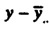
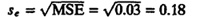
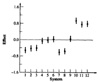

| Previous | Table of Contents | Next |
The logarithm transformation is just one of numerous other possible transformations. For a discussion of other possible transformations, see Chapter 15.
| TABLE 21.18 Measured Execution Times for the Intel iAPX 432 Study | |||||||
|---|---|---|---|---|---|---|---|
| Workload Execution Times | |||||||
| System | Word | ||||||
| No. | Processor | Language | Size | 484 | Sieve | Puzzle | Acker |
| 1 | VAX-11/780 | C | 32 | 1.4 | 250.0 | 9,400.0 | 4,600.0 |
| 2 | Pascal (UNIX) | 32 | 1.6 | 220.0 | 11,900.0 | 7,800.0 | |
| 3 | Pascal (VMS) | 32 | 1.4 | 259.0 | 11,530.0 | 9,850.0 | |
| 4 | 68000 (8 MHz) | C | 32 | 4.7 | 740.0 | 37,100.0 | 7,800.0 |
| 5 | Pascal | 16 | 5.3 | 810.0 | 32,470.0 | 11,480.0 | |
| 6 | Pascal | 32 | 5.8 | 960.0 | 32,520.0 | 12,320.0 | |
| 7 | 68000(16 MHz) | Pascal | 16 | 1.3 | 196.0 | 9,180.0 | 2,750.0 |
| 8 | Pascal | 32 | 1.5 | 246.0 | 9,200.0 | 3,080.0 | |
| 9 | 8086(5 MHz) | Pascal | 16 | 7.3 | 764.0 | 44,000.0 | 11,100.0 |
| 10 | 432 | Ada | 16 | 35.0 | 3,200.0 | 350,000.0 | 260,000.0 |
| 11 | Ada | 16 | 14.2 | 3,200.0 | 165,000.0 | 260,000.0 | |
| 12 | Ada | 32 | 16.1 | 3,200.0 | 180,000.0 | 260,000.0 | |
Data from Hansen et al. (1982). Reprinted with permission.
| TABLE 21.19 ANOVA Table for the Intel iAPX 432 Study | |||||||
|---|---|---|---|---|---|---|---|
| Sum of | Percentage of | Degrees of | Mean | F- | F- | ||
| Component | Squares | Variation | Freedom | Square | Computed | Table | |
| y | 576.64 | ||||||
|
| 449.01 | ||||||
|  | 127.63 | 100.0 | 47 | ||||
| Workloads | 113.01 | 88.5 | 3 | 37.7 | 1158.5 | 2.3 | |
| Systems | 13.55 | 10.6 | 11 | 1.2 | 37.9 | 1.8 | |
| Errors | 1.07 | 0.8 | 33 | 0.03 | |||


FIGURE 21.5 Confidence intervals for effects in the Intel iAPX 432 study.
| Previous | Table of Contents | Next |
){kind=link}
){kind=link}